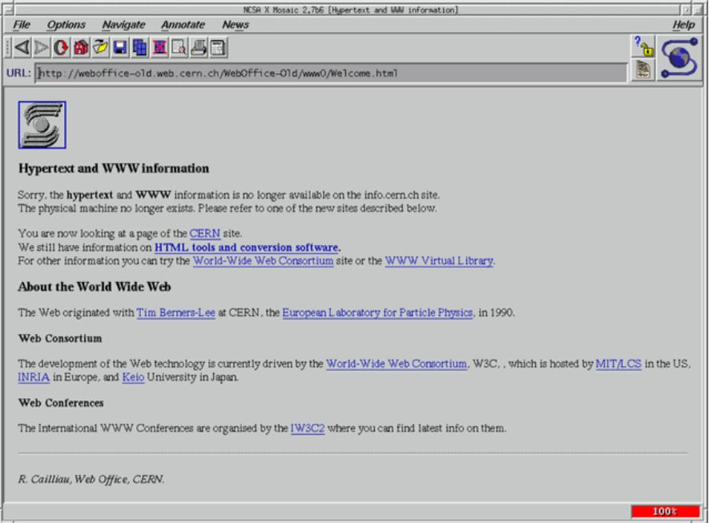

Early Browsers

(Image of Mosaic Browser)
Introduction:
Google Chrome, Edge, and Mozilla Firefox are common names that may come to mind when most people today try to name different types of internet browsers. How about Internet Explorer, Netscape Navigator, or even as far back as Mosaic? Each of these older browsers was discontinued, often to pave way for better, upgraded browsers developed by the same or competing organizations and corporations. The evolution of browsers was massive as the tech industry tried to grasp onto the growth and expansion of computer systems and the need for long distance interconnectivity. The development of the World Wide Web changed the way people connected and interacted with technology, and shaped the world of communication forever. This did not take merely a day for this to be achieved, but many decades in which a series of milestones had to be met in order to get to the World Wide Web and all that it is, today.
| Mosaic | Netscape Navigator | Internet Explorer |
|---|
| 1993 | 1994 | 1995 |
There remain several old web browsers existing today and being used, however many others were shut down. All of the three older browsers referenced earlier, were discontinued. Internet Explorer being one of them. It was discontinued by Microsoft and replaced by Microsoft Edge which had proven to do better with the users who favoured it for its better user-interface, safety, and better design. Technology was advancing and user interfaces were improving, web browsers needed to keep up with the rapid developments and changes in users’ needs and requirements while browsing the internet. But how did we even get to that point? When did developing web browsers begin and what was the journey really like?
Understanding the journey of the evolution of web browsers starts with understanding what a web browser is and what it helps solve. A web browser is an application which works as a medium to connect us to websites on the World Wide Web (WWW); they work to interact with a web server as it takes the data and presents it as a readable web page (GeeksforGeeks, 2023). The development of web browsers was groundbreaking in changing the interconnectivity between users and computers. This all began in 1960 when SABRE (Semi-Automatic Business Research Environment), which was initiated to operate as a “central reservation system” for online business transaction seven years’ prior, provided a platform for a salesman from the International Business Machines company (IBM) and president of American Airlines. They would both use computers to collaborate through the network to process requests for information, enter data, and conduct business. The SABRE system was put together with an understanding built off IBM’s project SAGE (Semi-Automatic Ground Environment) air defense computer system from 1949 to 1963. By the end of 1964, the two connected computers were operating thousands of terminals, which collectively processed 7500 reservations every hour (History of the Internet, 2024).